Portfolio
Timothée Teyssier
Data Scientist | Machine Learning & Computer Vision
Graduate of CPE Lyon — Imaging, Modelling & Computer Science (IMI)
Machine Learning · Computer Vision · Python · C++Portfolio
Data Scientist | Machine Learning & Computer Vision
Graduate of CPE Lyon — Imaging, Modelling & Computer Science (IMI)
Machine Learning · Computer Vision · Python · C++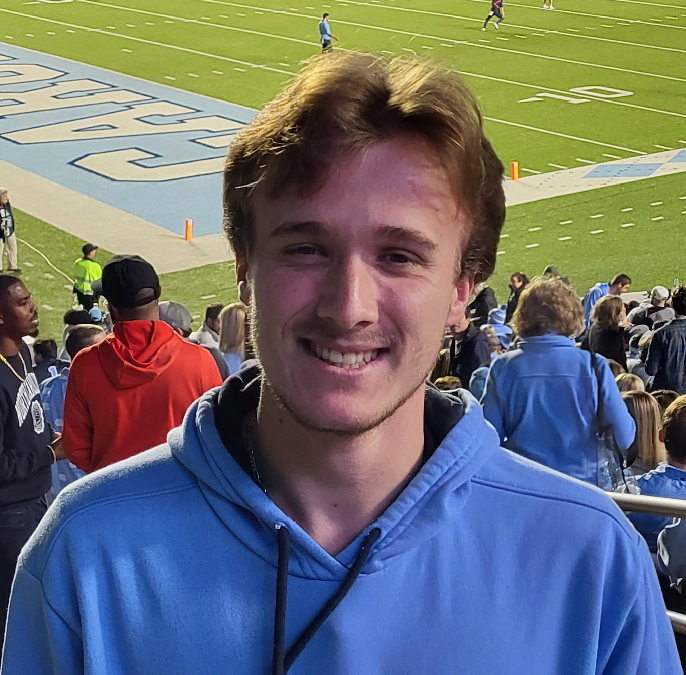
About me
AI & Computer Vision engineer based in Lyon, I design and ship industrial machine-learning applications that combine computer vision, software engineering and end-to-end ML workflows — from dataset preparation and model training to evaluation and deployment in desktop and mobile products.
Skills
DetecTool · SMP Technik
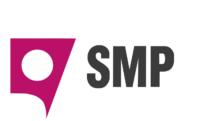
At SMP Technik, I build industrial AI applications that combine computer vision, machine learning and software engineering. My main product is DetecTool, an AI recognition solution for new and used metal-cutting tools (drills and mills).
In May 2026, we presented DetecTool at the Grinding Hub trade fair in Munich.
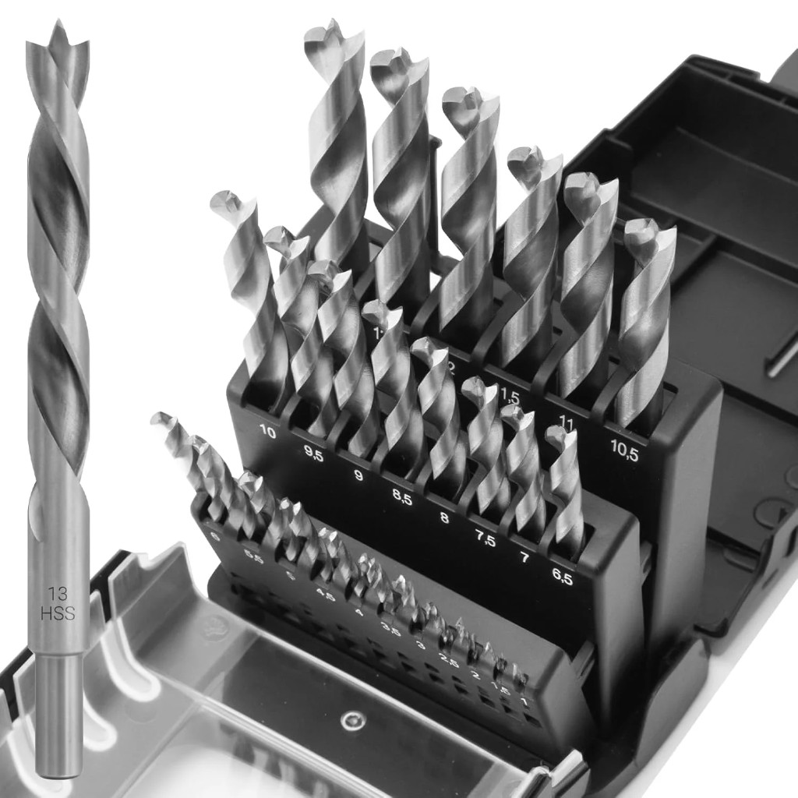
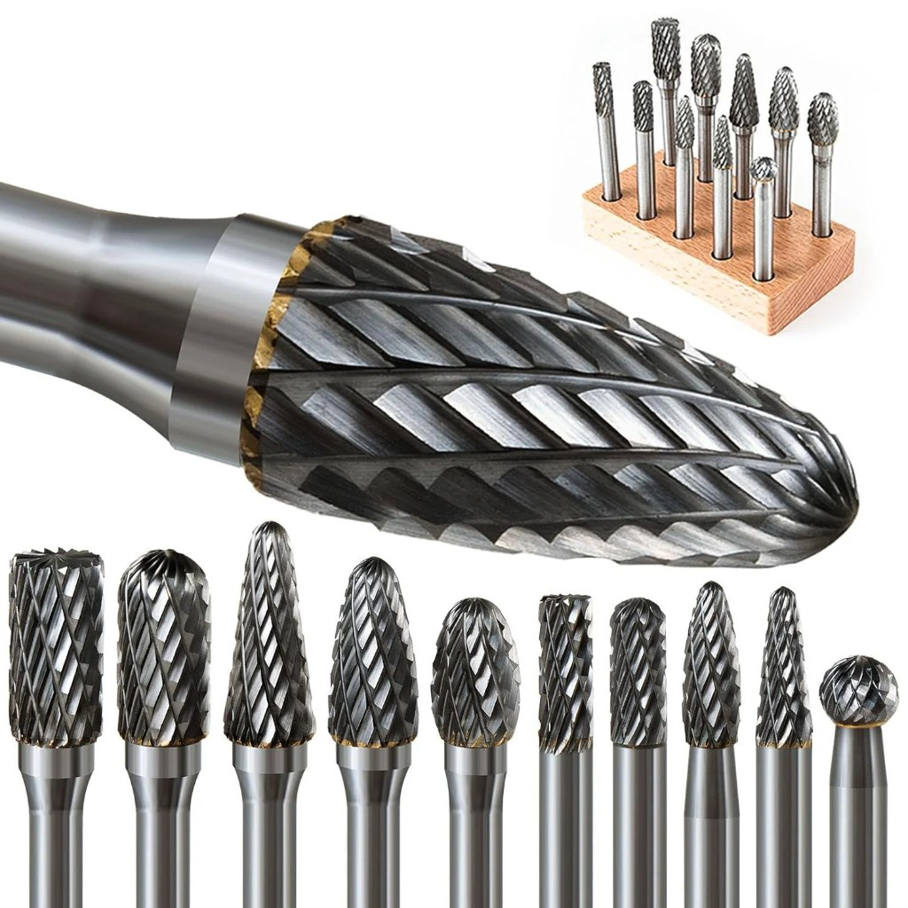
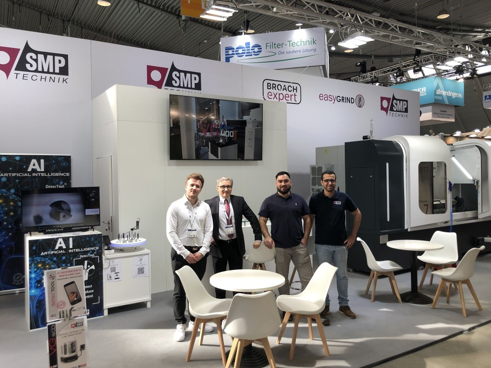
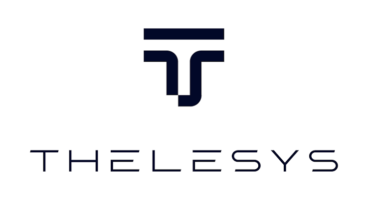
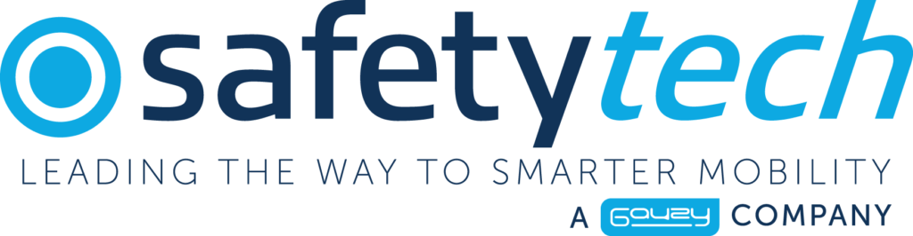
Developed a C++ / Qt application enabling communication between electronic components through UDS services and multithreading, working with real-time data from electronic systems and sensors. Worked in Agile (Scrum) with a 5-developer team: daily stand-ups, sprints, and iterative delivery.
Contributed to Paralabel, an open-source annotation platform for large 3D machine-learning datasets (ParaView plugin), including unit-test development and validation. Applied software development best practices through Git branching, pull requests, code reviews, and version management with tags.
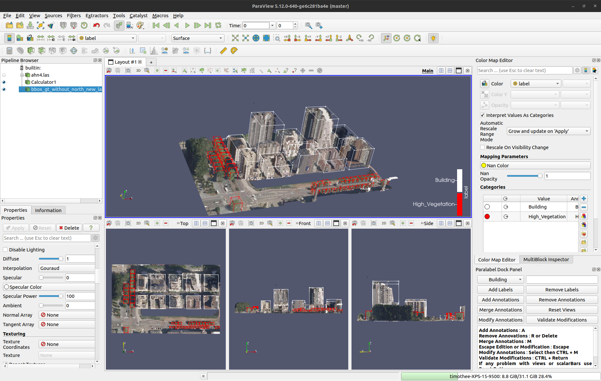
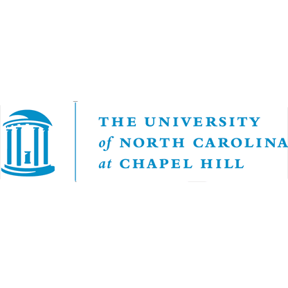
This research internship focused on large-scale medical datasets, with the goal of advancing healthcare and giving researchers better tools to understand the brain.
The aim was to support researchers as effectively as possible in their work and help push medical imaging research forward.
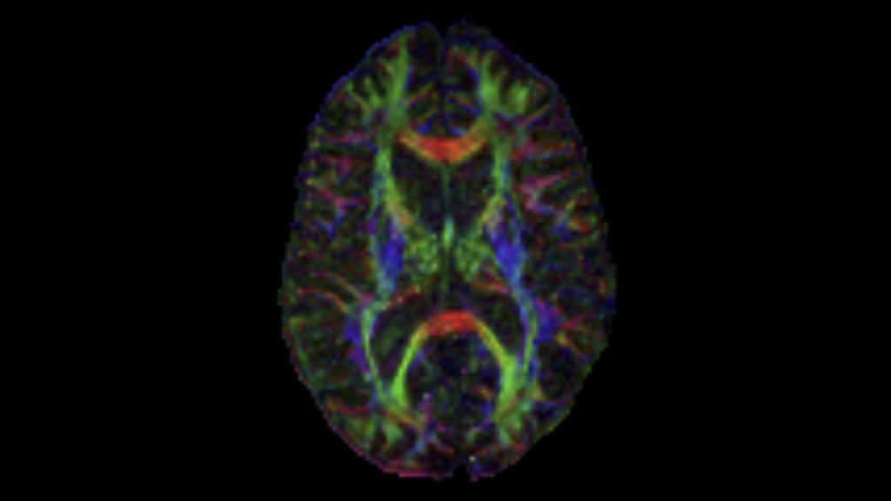
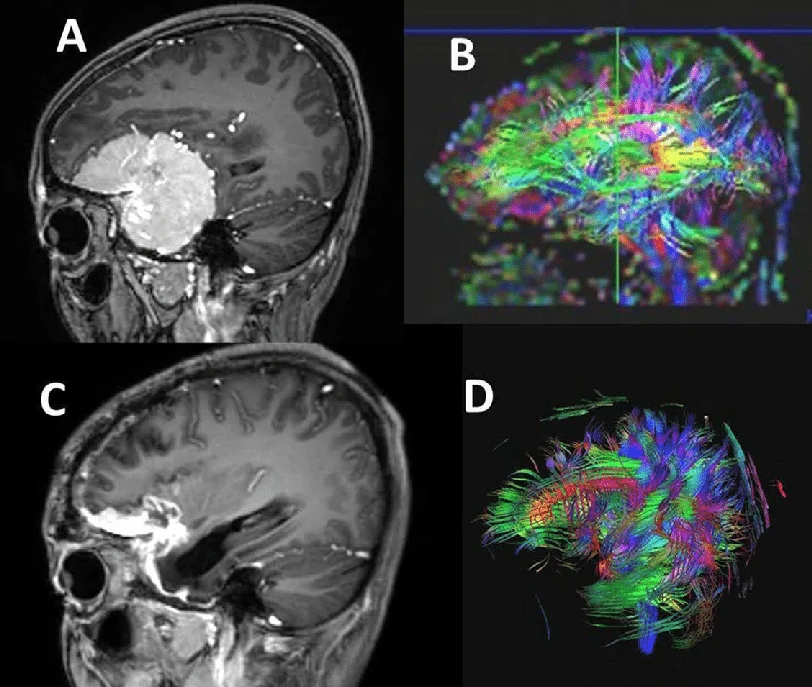
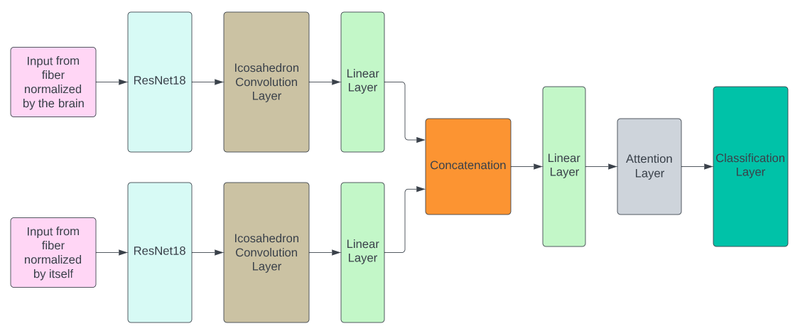
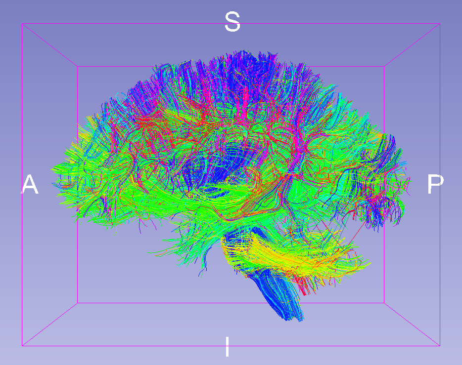
This project was carried out with Luc Anchling to reconstruct the 3D trajectory of a tennis ball using two cameras. It includes a camera calibration task to determine the 3D position of the tennis ball relative to a common reference frame for both cameras. It also includes a task to detect and track the tennis ball on both cameras even when the ball is partially occluded. The project was completed successfully, enabling the creation of a Unity video game (hitting 3D blocks with the tennis ball) as well as analysis of the ball's trajectory: speed, bounce point, and more.


As part of improving online health tools, I am currently working on an innovative web application to detect potentially cancerous moles. The application currently relies on an advanced algorithmic approach to analyze photos of moles, without artificial intelligence for now. The goal is to provide an initial visual assessment to detect early warning signs of skin cancer, mainly melanoma.
International Experience
GitHub
You can visit my GitHub profile for more details on my projects and contributions.
Visit my GitHub profile Contact me: timothee.teyssier@cpe.fr